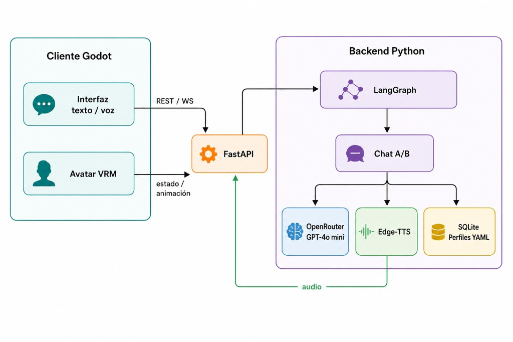
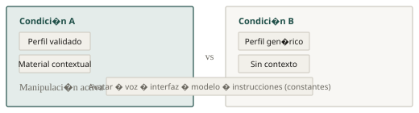
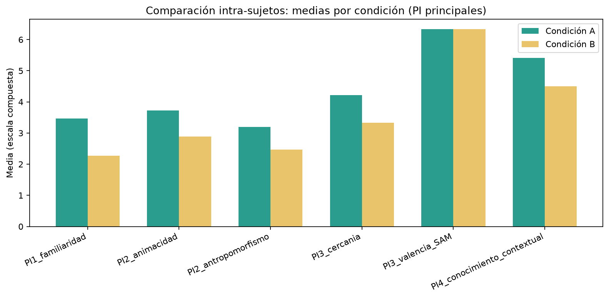
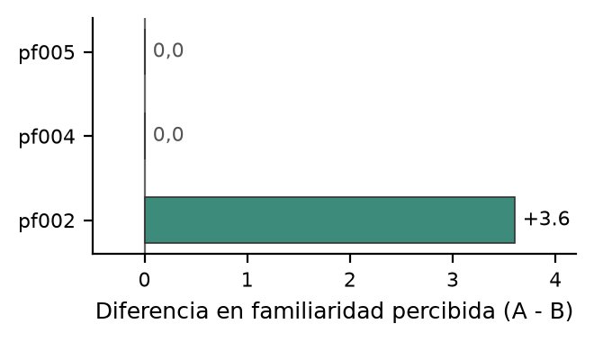

pf002
Cuant. Familiaridad A > B; valencia A < B
Cual. «Me dio miedo»; reconoció señales sin identificación explícita
Lectura Familiaridad con incomodidad afectiva
flechas o espacio · F pantalla completa
PF-3311 · Agentes Virtuales Inteligentes
Percepción de familiaridad en agentes virtuales mediante familiaridad conductual
01
Los agentes conversacionales suenan naturales, pero rara vez evocan a alguien conocido.
Pregunta
¿Pueden patrones conversacionales activar modelos mentales de personas conocidas, sin apariencia, voz ni identidad declarada?
La literatura estudia familiaridad con señales visuales, memoria y personalización explícita. Este trabajo aísla la conducta conversacional.
Señales de estilo que activan modelos mentales preexistentes. El agente no declara quién es ni pretende ser una réplica.
02
Una manipulación. Todo lo demás permanece constante.
| Indicador de validación | Umbral |
|---|---|
| Similitud conversacional | 4,5 |
| Naturalidad | 4,0 |
| Integridad de identidad | 5,5 |

Cliente Godot (interfaz, avatar, voz) y backend conversacional. Los perfiles se modifican sin alterar lo que el participante percibe.
El interés no es evaluar la plataforma, sino los efectos perceptuales del perfil conductual.
Perfil conductual validado, asociado a persona conocida. Material contextual presente en la conversación.
Perfil genérico, estilo neutro, sin material contextual del perfil.

03
Evidencia exploratoria con métodos mixtos
| Constructo | A | B | Diferencia |
|---|---|---|---|
| Familiaridad | 3,47 | 2,27 | +1,20 |
| Animacidad | 3,72 | 2,89 | +0,83 |
| Antropomorfismo | 3,20 | 2,47 | +0,73 |
| Cercanía | 4,22 | 3,33 | +0,89 |
| Valencia (SAM) | 6,33 | 6,33 | 0,00 |
| Conocimiento contextual | 5,42 | 4,50 | +0,92 |

pf002
Cuant. Familiaridad A > B; valencia A < B
Cual. «Me dio miedo»; reconoció señales sin identificación explícita
Lectura Familiaridad con incomodidad afectiva
pf004
Cuant. Escalas planas
Cual. Estilos distintos; sin familiaridad
Lectura Estilo perceptible, sin activación de familiaridad
pf005
Cuant. Cercanía y contexto A > B
Cual. Negó familiaridad en entrevista
Lectura Atribución contextual sin reconocimiento explícito
Hallazgo central · pf002
Me dio miedo
Reconoció familiaridad conductual e «información mía» sin que el agente declarara identidad, con valencia emocional reducida y no mayor agrado.
Único contraste marcado en familiaridad percibida. pf004 y pf005 permanecen en cero.

Discusión
Familiaridad reconocible no implica afecto positivo.
Conocimiento contextual percibido, confianza y valencia pueden desacoplarse. La familiaridad conductual no debe leerse como indicador unidimensional de éxito del agente.
luiscarlos.quesada@ucr.ac.cr · Universidad de Costa Rica